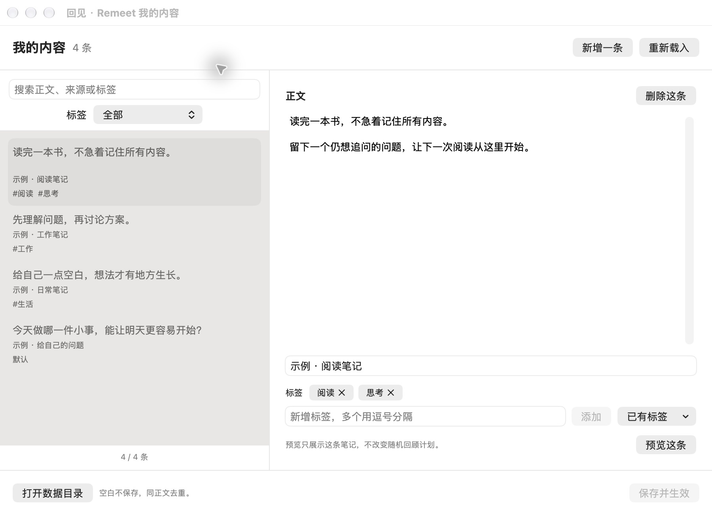
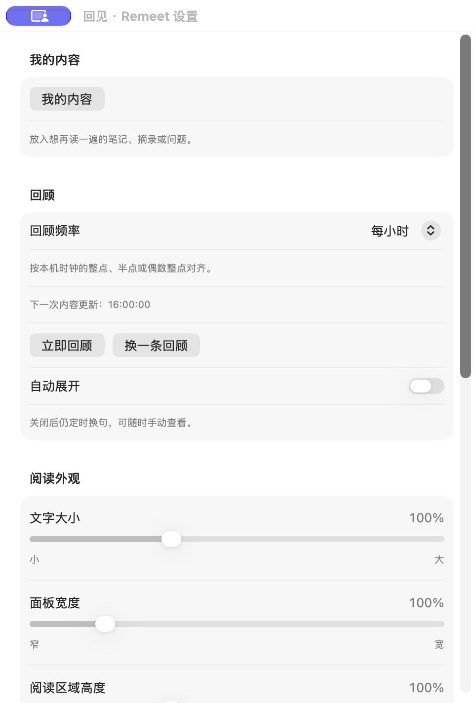

01 / 下载与安装
先把回见带到 Mac 上。
当前公开测试版支持 Apple Silicon（M 系列芯片），需要 macOS 14 或更新版本。
- 打开 GitHub Releases，在 Assets 中下载以
Remeet-开头的 App ZIP 附件。不要下载 Source code，那是源码。 - 解压，将 Remeet.app 拖入「应用程序」，然后打开。
- 找到菜单栏的小芽图标。回见不会常驻 Dock，刚启动时卡片默认收起。
首次打开被 macOS 拦截？
当前版本尚未使用 Apple Developer ID 签名，也未经过 Apple 公证。如果系统提示无法验证开发者：
- 先尝试打开一次 App。
- 进入「系统设置 → 隐私与安全性」，找到回见的提示，点击「仍要打开」。
- 再次确认打开，并按系统提示完成操作。
仅在确认下载来源和文件可信后操作。受公司管理的 Mac 可能不提供此选项。查看 Apple 官方说明。
02 / 添加第一条笔记
让屏幕上出现自己的想法。
- 点击菜单栏小芽图标，打开 我的内容。
- 新增一条内容，输入正文。来源和标签可以选填。
- 点击 保存并生效，或按 ⌘ S。
- 点击 预览这条，看看刚保存的笔记。

回见自带几条示例，可以直接编辑或删除。搜索支持正文、来源和标签；没有标签的内容归入「默认」。列表筛选只影响浏览，日常回顾仍从全部内容中随机选择。
误删后可「撤销删除」；修改已有内容并保存时，自动保留最近 10 份备份。「恢复备份」先载入草稿，确认保存后才生效。
保存冲突时可先「导出草稿」，保留副本后再重新载入。重复或空白正文会在保存前列出，来源和标签不会自动合并。
立即回顾：展开当前条目，保留这条内容。
换一条回顾：换一条内容，再展开卡片。
「预览这条」用于查看编辑列表中选中的笔记，不改变随机回顾条目或计划。
03 / 调整回顾节奏
以舒服为准。
回见默认每小时随机展示一条。卡片自动展开后，鼠标停留在卡片上可以继续阅读，移开后会自动收起。
- 调整出现频率
- 设置 → 回顾频率。选择每 30 分钟、每小时、每 2 小时，或自定义分钟 / 小时。
- 给阅读多一点时间
- 设置 → 阅读时长。选择常用值或自定义秒数，也可以在「阅读外观」调整文字和卡片大小。
- 只在想看时展开
- 关闭「自动展开」，通过菜单或悬停查看。
- 需要专注一会儿
- 从菜单选择「暂停展示」，需要时再恢复。暂停状态会在重启后保留。
查看设置界面

常用间隔按本机整点或半点对齐；自定义间隔从点击「应用」时起算，重启后重新计时。手动查看不会改变下一次计划，睡眠后不会补播。
04 / 导入已有笔记
让旧笔记，也能再见。
少量内容可以直接粘贴到「我的内容」。如果已有文本、Markdown 或 flomo 导出，可选用回见助手 Skill，帮助整理后一次性加入回见。
普通使用不需要安装 Skill。以下方式适合已经在使用支持 Skill 的 Agent 的用户。
npx skills add catwithtudou/remeet --skill remeet -g安装命令需要 Node.js 22.20+；内容导入需要 Python 3.10+。
安装后，可以在 Agent 中这样说：
使用 $remeet，把这些笔记加入回见，保留原文和来源，跳过重复内容。
目前只导入文字，不连接笔记账号，也不自动同步。
查看完整导入指南遇到一点小问题
这里可能有答案。
打开后，为什么没有看到卡片？
启动时默认收起。点击菜单中的「立即回顾」即可查看。如果上次暂停了展示，需要先恢复。
Mac 重启后会自动打开吗？
目前需要重新打开回见。打开后会继续使用已保存的内容和设置。
升级会丢失内容吗？
先保存草稿并退出回见，再替换「应用程序」中的 App。已保存笔记与设置会继续保留，目前没有自动更新。
在哪里备份笔记？
从菜单选择「打开数据目录」，备份其中的 quotes.json 文件。内容保存在本机，卸载或迁移前可以先保留一份备份。